Welcome
Welcome to the Taiwan Returnee Club (TRC) Discord server, we are thrilled to have you here!
For starters, please read the rules so that we are all on the same page on how to act nicely and make the community a positive and vibrant one. We are NOT a political server, thus, if you want to talk politics, send them in the #辯論┊debate channel. Likewise, deliberate provocation causing server conflicts will cause you to be muted or even banned. Thank you!
Server Rules
- Any form of profanity, bullying, obscenity (or NSFW), hatred, racism or discrimination is strictly prohibited and will not be tolerated. This also includes aggressionism or use of insensitive remarks.
- Respect and follow the instructions of staff members whenever possible.
- Respect fellow members’ personal decisions and privacy where any form of harassment or excessive pinging will result in a mute or direct ban from the server.
- Having an appropriate account name, profile picture or background images is a must.
- Identity fraud or impersonating other people are strictly prohibited, likewise, we do not allow use of "alt accounts".
- Exploitation of staff members, rules, and bots will result in an immediate ban. Likewise, hacking or tampering with the server and its systems are also prohibited.
- This is not a dating server whereby public displays of affection or flirtatious behaviour should be kept minimally.
- We do not allow any form of advertising or spamming of invite links to TRC, OR to other Discord servers.
- Respect Discord’s rules and applicable Terms of Service (ToS) statements.
How we Moderate
This is our general process in handling members who break server rules. Please note that verbal reminder, warning, and notice are synonymous in this server. They mean the same thing. A verbal reminder is ANY reminder given to you verbally by the staff which may be in the server or in DMs (direct messages).
- @First Strike, @Second Strike and @Last Strike: nothing happens, you just get pinged and verbally reminded.
- @First Warning: your account will be muted for 1 day.
- @Second Warning: your account will be muted for 2 days, you cannot change nicknames for 14 days, and 14 days ban from entering any voice chats (VCs) in the server.
- @Last Warning: you are muted for 7 days, will not able to change nicknames, and are banned from all voice chats in the server.
- Finally, we ban members who violates our rules again after @Last Warning.
Notice how we all start out as green in the @Norm after verification. This means you have no infractions recorded in this server. As you get closer to getting banned, your color changes to yellow and then shifts to dangerous red right before your ban.
Respect all staff decisions. Calmly discuss with a staff member if you think there's been a mistake. If you throw a tantrum, your strike will quickly progress to a ban. Please do not throw a tantrum as all bans are final.
FAQs
TRC's Message
The internet can be a dangerous place, please be cautious of who you text and what information you send online. Be careful with your passwords and always use common sense when making important decisions, sticking to basic sense and sensibility. Thank you ever so much for joining us and we hope you have an amazing and long-lasting time with us!
- The Taiwan Returnee Club Team
© 2022 The Taiwan Returning Compatriots Society.